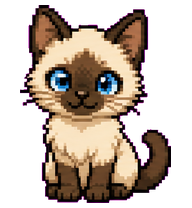

文字和图片历史
自动记录最近复制的文字和原图质量图片，按时间倒序展示。

PastePawFuFu keeps your clipboard cozy
PastePaw 会在后台记录你最近复制的文字和图片。需要找回内容时，从菜单栏打开，搜索、置顶、删除，或一键复制回剪贴板。
轻量、直观、本地保存，适合每天反复复制文字和图片的工作流。
自动记录最近复制的文字和原图质量图片，按时间倒序展示。
重要内容可以置顶保存，不会跟随普通历史一起过期。
在主窗口中搜索文字历史，快速定位刚刚复制过的片段。
直接从菜单栏选择最近历史，点击后复制回系统剪贴板。
当前项目已经包含 macOS 应用和静态网页。使用项目脚本可以构建并打开 PastePaw。
./script/build_and_run.sh
PastePaw 的历史记录保存在本机 Application Support，不同步、不上传。你可以设置保留天数，并随时清空非置顶记录。
FuFu 也在其他小工具里陪你工作和休息。看看 SlackerBuddy，让它在桌面上提醒你喝水、休息和放松。